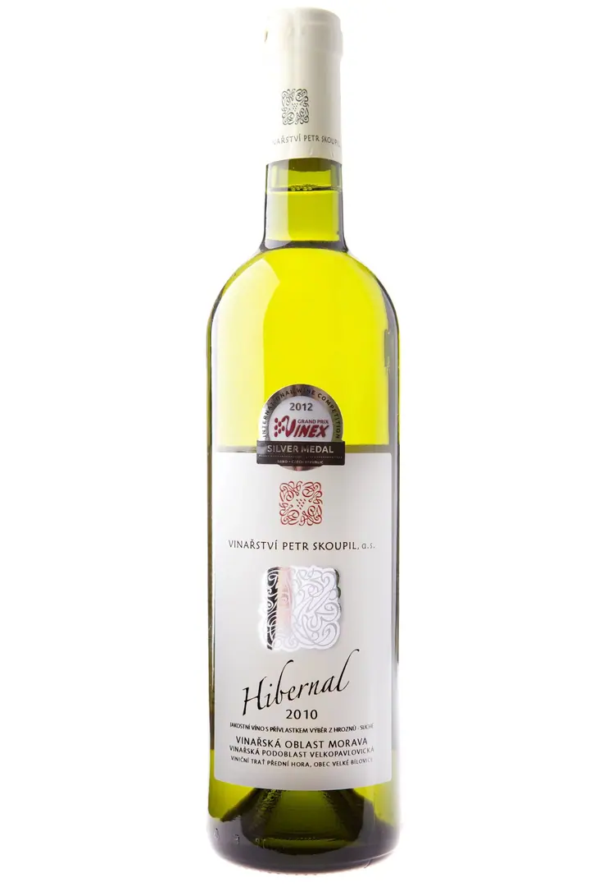
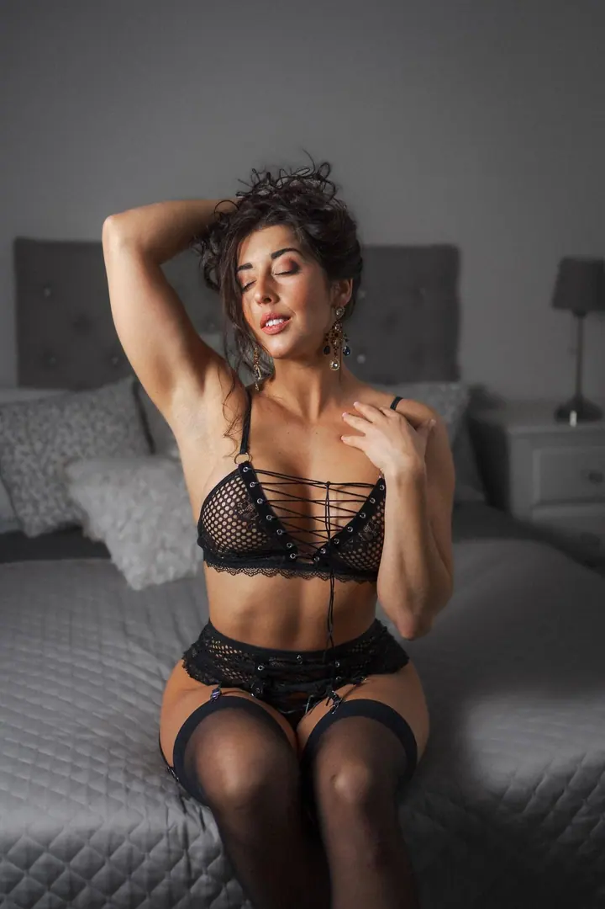

01 / 04
Svatební focení
Na svatbě hlídám hlavně emoce a přirozenost a poradím si venku i uvnitř. Fotím se dvěma fotoaparáty a se zálohami. Když budete chtít, natočím i svatební video.
Zeptat se na termín→




Svatby a portréty plné emocí a přirozenosti
Zeptat se na termín →(01) Ahoj
Jmenuji se Michal Šviga a jsem svatební a portrétní fotograf z Prahy. Při focení se zaměřuji na emoce a přirozenost , ať fotím svatbu, portrét ve studiu nebo maturitní ples. Hlavně chci, abyste si to se mnou užili.
(02) Co fotím
01 / 04
Na svatbě hlídám hlavně emoce a přirozenost a poradím si venku i uvnitř. Fotím se dvěma fotoaparáty a se zálohami. Když budete chtít, natočím i svatební video.
Zeptat se na termín→02 / 04
Můžete přijít sami nebo s partnerem a fotit se dá v mém studiu nebo venku. Postarám se o klidnou atmosféru, ve které můžete být opravdu sami sebou.
Zeptat se na termín→03 / 04
Fotím maturitní plesy, firemní akce a další události. Zachytím atmosféru večera, nástup i tanec.
Zeptat se na termín→Dále nabízím
Fotím reprezentativní portréty pro firmy, weby a profesní profily. Pracuji ve studiu s profesionálním světlem a technikou.
↗(04) Postup
Od první zprávy po hotovou galerii.
Krok 1 z 4
Zavolejte, napište e-mail nebo zprávu přes iMessage, WhatsApp či Viber. Společně najdeme termín, který vám vyhovuje.
Krok 2 z 4
Řekněte mi, jak si focení nebo svatbu představujete. Jsem otevřený vašim nápadům a vymyslíme, jak je proměnit v hezké fotky.
Krok 3 z 4
Fotím ve studiu nebo venku, v klidné a uvolněné atmosféře. Na svatbě se snažím být nenápadný a nechat vás den užít.
Krok 4 z 4
Fotky pečlivě vyberu a upravím a pošlu vám je, abyste si je mohli uložit a sdílet.

Hlavně si svůj den užijte, o fotky se postarám já.
(05) Za objektivem
Fotím svatby v Praze a ve Středočeském kraji, portréty, páry, maturitní plesy i firemní akce. Poradím si venku i v interiéru. Na svatbu nosím dva fotoaparáty a zálohy, aby se nic neztratilo a vy jste se nemuseli o nic starat.
Jsem pohodový člověk a nezkazím žádnou legraci. Záleží mi na tom, abyste se u mě cítili pohodlně a v klidu, protože jen tak vznikají opravdové a přirozené fotky. Každý člověk a každý pár má svůj příběh a já ho chci v portrétu najít.
Kromě portrétů moc rád fotím krajinu. Volný čas trávím s rodinou a na cestách. Začínajícím a amatérským fotografům vedu kurzy a workshopy a pro fotografy jsem připravil i vlastní systém na evidenci zakázek a plánování focení.
Michal
Michal Šviga · Svatební a portrétní fotograf
Sídlím v Praze 4 a nejčastěji fotím v Praze a ve Středočeském kraji. O jiném místě se klidně domluvíme.
Svatební focení začíná na 8 900 Kč a svatební video na 9 900 Kč. Konečná cena záleží na délce a rozsahu dne, proto se mi ozvěte a připravím vám nabídku na míru.
Fotím se dvěma fotoaparáty a mám s sebou zálohy, takže výpadek jednoho přístroje focení nezastaví.
Fotit můžeme v mém studiu, kde mám zázemí i světla, nebo venku. Portréty začínají na 1 900 Kč.
(07) Kontakt
Napište pár vět o tom, co si představujete, a termín, který se vám hodí.